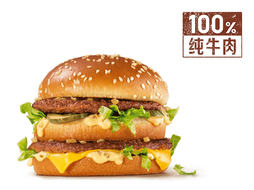
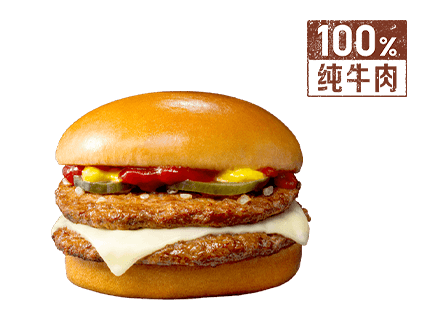

01 / 三人拼单
口味不同，也能一起点。
¥57.70
牛肉堡、鱼肉堡、鸡肉堡各一份，三杯饮料，其中一杯无糖；共享 5 块麦乐鸡。
✓ 三人预算 ¥65 内
把每个人想吃的，变成一份
真正能买的餐单。
告诉 AI 人数、口味和预算。它查真实菜单、拆套餐、算整单；有人临时改主意，再接着改。
四个人，120 元。
一个不吃辣，一个要无糖，还想分点小食。

小林不吃辣
小周配无糖可乐 小陈想吃鸡肉
小陈想吃鸡肉你负责说想吃什么。
剩下的来回沟通，交给 Skill。
不用把需求填进一长串表格。
在支持 Skill 和 MCP 的 AI 客户端里，直接聊。
小林不吃辣，小周要无糖，小陈想吃鸡肉，小许想分小食。4 人，预算 ¥120。
点击方案比较取舍，再试着给小周换个堡。这里回放真实核价结果；实时配餐在你的 AI 客户端中运行。
小周换麦香鱼，保留无糖可乐
换麦香鱼加 ¥1.00，由小周自己承担。无糖可乐照旧；另外三人的餐品与分摊保留。
2026 年 10 月 14 日，使用麦当劳官方 MCP 查询上海徐家汇餐厅（天钥桥路 1 号）的到店菜单。四名成员与需求是演示案例；套餐选项和四份整单报价来自真实调用。
页面回放保存的结果。分摊是演示中约定的 AA 方案，个人换堡自付差价；不是官方商品单价。餐品供应和价格以实际下单时的官方结果为准。
餐品图片来自麦当劳官方菜单，展示对应商品；具体份量以餐单文字为准。查看图片来源 ↗
查看请求参数、响应与完整过程 ↗再用一个新需求实测 Skill。
三个人变两个人，预算从 ¥65 改为 ¥40。
牛肉堡、鱼肉堡、鸡肉堡各一份，三杯饮料，其中一杯无糖；共享 5 块麦乐鸡。
保留另外两人的汉堡、饮料和共享小食，重新核算完整清单。
另外两人的原汉堡与饮料保留。官方重新核价，两人按约定各付 ¥14.90。
2026.10.14 · 上海徐汇漕溪北路百脑汇餐厅 · 到店自取。三份清单分别调用官方核价，未下单。查看实测与依据 ↗
需要支持 Skill / MCP 的客户端，
以及你自己的麦当劳 MCP Token。
解压后，把 mcd-meal-director 文件夹放入客户端的技能目录。
~/.agents/skills/Claude Code ~/.claude/skills/在官方开放平台 ↗登录并激活 Token，再在客户端配置服务。
https://mcp.mcd.cnStreamable HTTP · Bearer Token用自己的话说，不用逐项勾选。
把需求交给已接入 Skill 与麦当劳 MCP 的 AI 客户端，让它查询、配餐、核价。